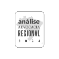
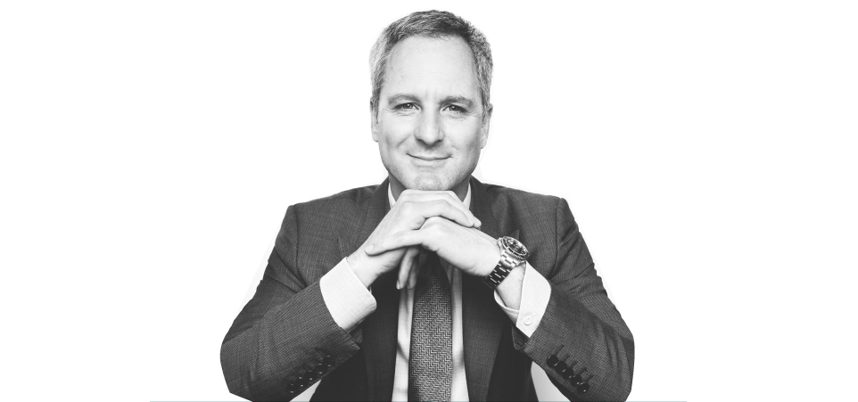

Atuamos com excelência e inteligência em processos de alta complexidade, de forma especializada e humana, para buscar soluções estratégicas e os melhores resultados para os nossos clientes.
Desde a fundação do escritório, há 10 anos, nosso propósito é somar em negócios e relações humanas através do Direito, com inteligência, cuidado e presença lado a lado.


Universidade Presbiteriana Mackenzie Bacharel em Direito, Direito Internacional do Comércio (1994 - 1999). Participou como expert em legislação civil estudo “Rule of Law Index”,
Formação acadêmica: Formação acadêmica: Bacharel em Direito pela Universidade Presbiteriana Mackenzie. Reconhecimentos e premiações:
Participou como expert em legislação civil no estudo "Rule of Law Index", conduzido pelo World Justice Project.
Indicado pela Análise Advocacia 500 no ano de 2018 dentre os mais admirados advogados da área cível contenciosa (setor têxtil) no Brasil, Vice-Presidente Executivo (biênio 2023-25) da SOAMI-CPOR/SP.
Inscrito na OAB/SP sob o n° 169.034 e na OAB/R| sob o n° 2.491-A
Email: joel.vaz@fmouravaz.com.br
IDIOMAS
Inglês e Espanhol
Bacharel em Direito pela Universidade Federal do Estado do Rio de Janeiro (2007); Pós-Graduado em Direito Tributário Constitucional pela PUC/SP (2012)
Formação acadêmica: Bacharel em Direito pela Universidade Federal do Estado do Rio de Janeiro (2007): Pós-Graduado em Direito Tributário Constitucional pela PUC/SP (2012)
e em Direito Fiscal pela Faculdade de Direito da Universidade de Coimbra (2013); MBA em Finanças pela FUNDACE/USP (2022):
Cursos em Conselho Fiscal na Prática (2024), Direito Aduaneiro para Tributaristas (2022), Planejamento Estratégico para Escritório de Advocacia (2021),
Planejamento Tributário e Gestão no Terceiro Setor (2015), Direito Societário e Mercado de Capitais (2013), Aspectos
Práticos de Preços de Transferência (2011), Planejamento Tributário e Tributação Internacional (2008) e Contabilidade Avançada para Advogados (2008).
Inscrito na OAB/RJ sob o n° 149.967 e na OAB/SP sob o n° 291.470
Email: moura@fmouravaz.com.br
IDIOMAS
Inglês
Nosso time trabalha para entregar soluções estratégicas com integração de inteligências.
O nosso atendimento é personalizado, simplificado e eficiente, com valor agregado e justo.
Direito Tributário
A prática tributária FMoura Vaz atua em consultoria, contencioso administrativo e judicial, assessorando seus clientes com ética, transparência & compromisso. Nossa área tributária abrange:
Direito Trabalhista
Direito Cível
Contencioso Cível e Arbitragem
Consultivo Cível
Licitações